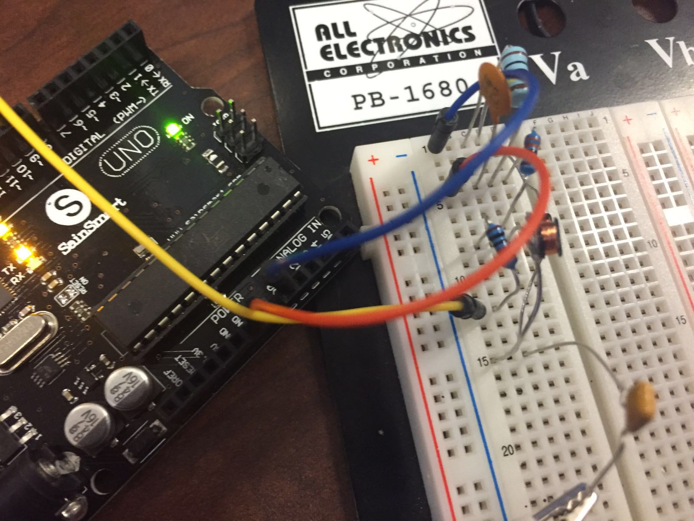
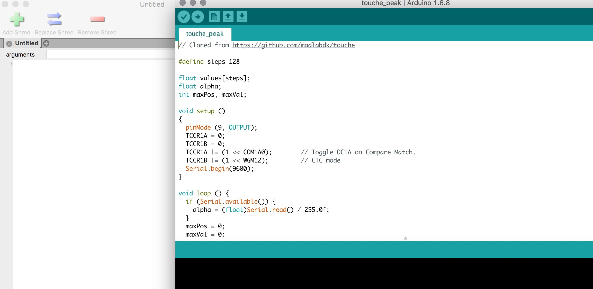

GATHER ALL THE MATERIALS YOU'LL NEED
Step 1
This tutorial requires you to have a basic understanding of circuits for you to be
able to make sense of the materials you'll need. As you've seen above, you'll need
an arduino (and the accompanying wires), a breadboard, resistors, capacitors, inductors, and diodes. Here's the link for the shopping cart with all the materials to recreate this project twice (or if you just messed up the first time). I did end up breaking both the inductors.
Fair word of warning however: You will need to solder wires onto the connecting ends of
the inductor. The inductors are tiny and it is difficult to solder so take your time. In the shopping cart, I have added two inductors, however feel free to add more; they are only $0.50 each.
Without further ado here is the link.

DOWNLOAD THE SOFTWARE
Step 2
This project requires equal contribution from software and hardware. Once you've placed
an order for the hardware part, go ahead and download the software needed to familiarize yourself with it. First, go to the website for all things arduino and download the arduino software.
Once that's done, download ChucK. ChucK is a music programming language that enables people
to code music. Since we are modulating water, you would obviously need to download the software for ChucK as well. Go here and download it for the appropriate OS.
Then, go ahead and download this file which contains all the
relevant ChucK code. Take some time out and familiarize yourselves with the commands reqiured to run the program.
CREATING THE CIRCUIT
Step 3
Undoubtably, the hardest part of the project, be sure to closely look at the photos provided to create the circuit. First things first, label all the resistors, capacitors, inductors, and diodes for easy reference.
Create the circuit on the breadboard that you have. A few of the wires have to connect from
the breadboard to the arduino to create a complete circuit.
Once you're done creating the curcuit, take the alligator clip you have and attach it to one end of the arduino. The other end has to be dipped into the cup of water.
Go ahead and get a cup of water and dip the other end of the clip in.